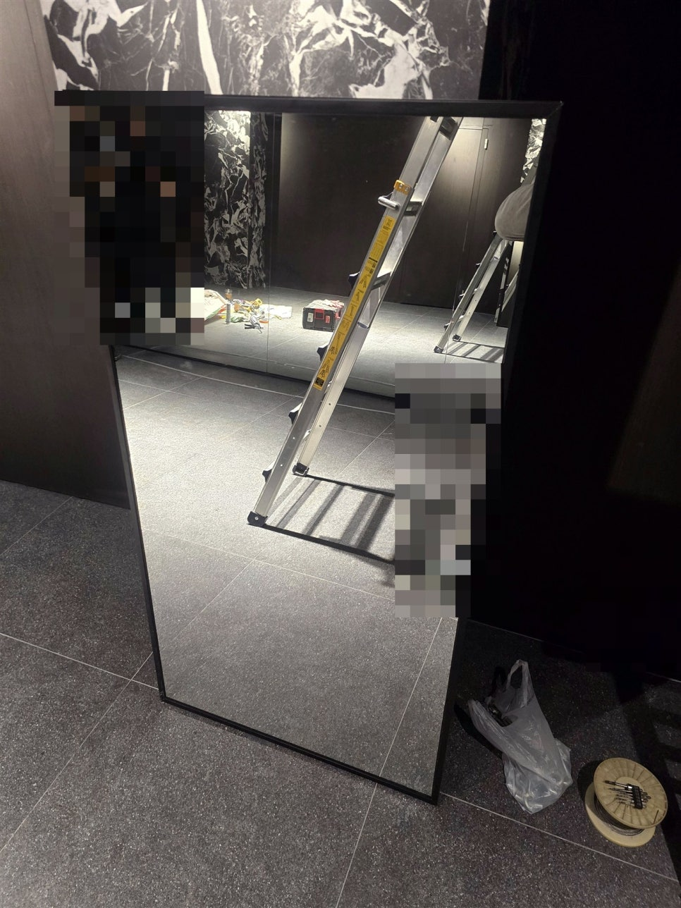
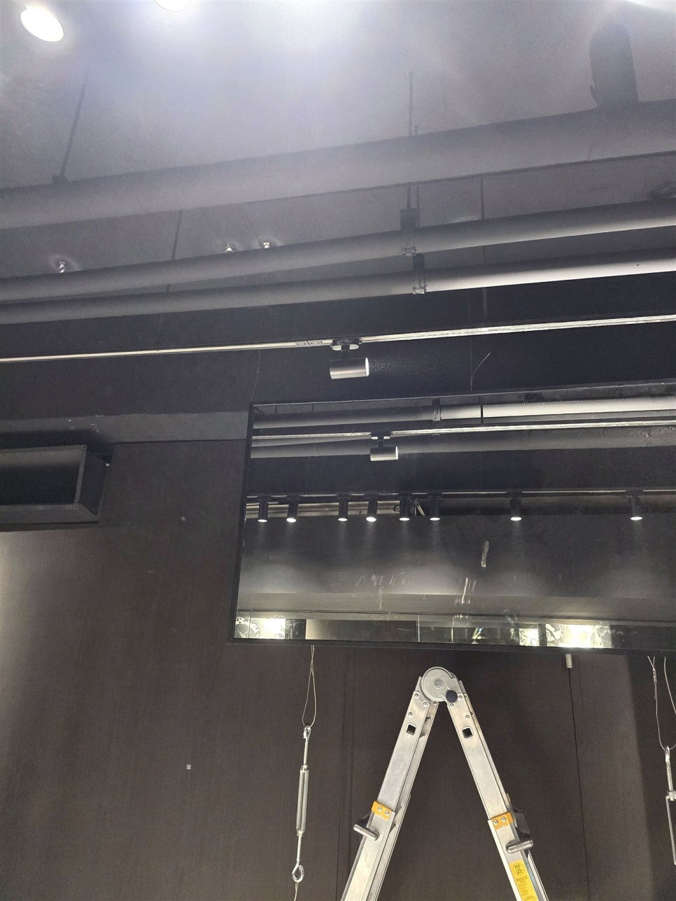

경사거울은 윗부분을 벽에서 띄워 아래쪽을 내려다보게 다는 거울입니다. 송파구 가락동의 한 헬스장에서 기둥 사이 높은 벽에 이렇게 숙인 거울 두 장을 달았습니다. 바닥에서 몇 걸음 물러나 있어도 온몸이 한 번에 비치게 하려는 자리였습니다.
한눈에 보기
| 작업 | 주문 제작 테두리 거울 2장 기울여 걸기 |
|---|---|
| 지역 | 서울 송파구 가락동 |
| 장소 | 헬스장, 대리석 무늬 기둥 사이 짙은 우드 벽 맨 위 |
| 거울 | 5T(5mm) 은경, 1800×1000mm 2장 |
| 테두리 | 검은색 알루미늄, 거울 크기에 맞춰 제작 |
| 고정 | 와이어에 매달고 턴버클로 숙는 각도 맞춤 |



경사거울은 벽에 붙이는 거울과 무엇이 다른가요?
일반 벽거울은 뒷면을 벽에 대고 실리콘으로 접착합니다. 앞으로 숙이는 거울은 윗변이 벽과 떨어져 있어서 접착제만으로는 무게를 받을 곳이 없습니다.
그래서 이 현장은 거울 네 변을 알루미늄 테로 감싸 한 판으로 묶고, 그 무게를 와이어가 받도록 했습니다. 테가 모서리를 덮고 있어 비스듬히 걸려도 유리 단면이 드러나지 않습니다.
숙인 거울은 시선이 바닥 쪽을 향하므로 벽 앞에 바짝 다가서지 않아도 온몸이 담깁니다.
거울고정 전에 벽과 천장에서 무엇을 봤나요?
거울이 들어갈 높이는 천장 배관 바로 밑이었습니다. 천장은 마감 없이 구조가 드러나 있고 배관 여러 줄, 조명 레일, 환기구가 함께 지나가서 와이어가 내려올 길이 이것들과 엉키지 않는지부터 살폈습니다.
벽은 짙은 색 우드 판 마감이라 판과 판이 만나는 선, 원래 뚫려 있던 구멍 위치를 보고 거울 놓을 자리를 잡았습니다.
스팟 조명이 벽을 정면으로 비추고 있어서, 숙이는 각도에 따라 빛이 거울에 맞고 튀지 않는지도 함께 따졌습니다.
두 장을 같은 각도로 다는 순서
- 검은 테를 두른 거울을 바닥에 세워 두고 크기와 테 상태를 먼저 확인했습니다.
- 사다리를 놓고 첫 번째 거울을 기둥 옆 자리에 와이어로 걸었습니다.
- 와이어 중간의 턴버클을 조금씩 돌려 길이를 바꾸면서 앞으로 숙는 정도를 잡았습니다.
- 두 번째 거울을 나란히 건 뒤 좌우 높이와 기울기가 첫 장과 같아질 때까지 한 장씩 다시 조절했습니다. 각도가 서로 다르면 두 거울 사이에서 몸이 꺾인 것처럼 비칩니다.
- 바닥에서 올려다보며 가운데 이음매 양쪽이 같은 각도로 바닥을 비추는지 확인하고 마쳤습니다.
경사거울 비용은 어떻게 정해지나요?
이런 거울은 크기마다 테를 따로 만드는 주문 제작이라 정해진 가격표가 없고, 이 현장도 금액은 따로 밝히지 않았습니다.
값을 움직이는 조건은 네 가지입니다. 천장 가까운 높이라 모든 작업을 사다리 위에서 한다는 점, 붙이지 않고 거는 방식이라 와이어와 턴버클 같은 부자재가 더 든다는 점, 테두리 제작, 그리고 여러 장의 각도를 똑같이 맞추는 데 드는 시간입니다.
벽에 붙이는 일반 거울시공보다 손이 더 가는 편이라, 현장 사진과 원하는 크기를 받아 본 뒤 견적을 드립니다.
자주 묻는 질문
- Q. 이렇게 숙여 다는 거울은 아무 벽에나 걸 수 있나요?
- 와이어가 내려올 위쪽 구조와 주변 배관·조명부터 확인해야 합니다. 거울 놓을 벽과 그 위 천장이 한 장에 담긴 사진을 보내 주시면 걸 수 있는 자리인지 사진으로 먼저 봐 드립니다.
- Q. 왜 실리콘으로 붙이지 않고 와이어로 거나요?
- 윗부분이 벽에서 떠 있는 거울은 벽과 닿는 면이 거의 없어 접착만으로 무게를 버티기 어렵습니다. 그래서 테두리로 거울을 한 판으로 잡고 와이어에 무게를 싣는 방식으로 답니다.